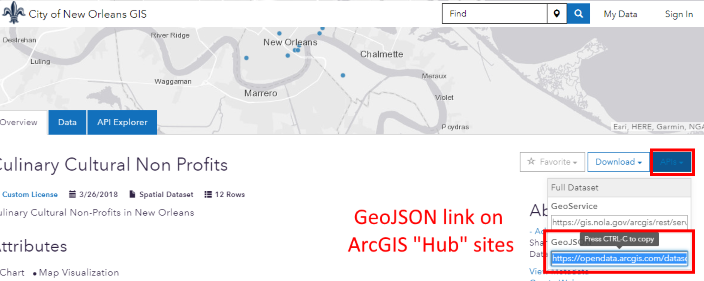

Lab Assignment 9
GeoJSON layers with Leaflet
Use Leaflet to display GeoJSON data on a map. Change the symbology based on attribute values and show attribute values in a popup. This assignment is based on the Using GeoJSON with Leaflet tutorial but shows how to read GeoJSON from a web service.
Younger and older populations: median age by state,
Process
-
Create a copy of the previous assignment’s folder and rename it to
map3. Rename the previous.jsfile tomap3.jsand update thescripttag inindex.htmlto use the newmap3.js. Do the same for the CSS file. -
In the JavaScript file, delete the parts from the previous assignment that created the WMS layers, but leave the basemap. You will start adding the code for this assignment on the line below where you created the basemap layer in the previous assignment.
-
In addition to the Leaflet library, this assignment will use another library to help us fetch GeoJSON data from web services. The library is called jQuery, and the following
scripttag can be included in yourindex.htmlbefore Leaflet’sscripttag:<script src="https://ajax.googleapis.com/ajax/libs/jquery/3.4.1/jquery.min.js"></script> -
For the GeoJSON data that you will add to the map, you can download an example US state demographics GeoJSON file and the metadata spreadsheet. Or find/create your own GeoJSON dataset. For example, ArcGIS Hub sites, such as NOLA Open Data and EBR Open Data, offer a GeoJSON option:
 -
Copy the URL to your chosen GeoJSON file and paste it into your JavaScript file as the value of a variable, e.g.:
var renameThisUrl = 'https://geog4046.github.io/assignment-resources/data/us_state_demographics_ESRI_2010A.geojson' -
The next lines of JavaScript will use that URL as the first argument in the
getJSONmethod to get the GeoJSON data (layer attributes and geometry) and feed it to Leaflet to be mapped.jQuery.getJSON(renameThisUrl, function (data) { L.geoJSON(data).addTo(renameThisMap) })Note: The jQuery method
getJSONis different from the Leaflet methodgeoJSON. -
The
L.geoJSONmethod above only has one argument,data, but it can optionally take another argument that allows us to specify style settings (e.g., colors and line thickness). The style settings are an object that can have a few properties, but for now we will just use thestyleproperty to change the color of our GeoJSON layer:L.geoJSON(data, { style: { color: 'green' } }).addTo(renameThisMap)In the example above, the second argument is an object containing another object. Object 1 is Leaflet’s GeoJSON options object. Object 2 is Leaflet’s style object:
// |---------object 1---------| // |---object 2-----| L.geoJSON(data, { style: { color: 'green' }}).addTo(renameThisMap)To illustrate this point, change the code to a longer form using variables, where
renameThisStyleObjectis an object with a style option (onlycolor) andrenameThisGeojsonOptionsObjectis an object that says this layer’s style should be set to the contents of therenameThisStyleObjectobject (again it contains onlycolor):var renameThisStyleObject = { color: 'green' } var renameThisGeojsonOptionsObject = { style: renameThisStyleObject } L.geoJSON(data, renameThisGeojsonOptionsObject).addTo(renameThisMap) -
Add additional settings (properties) to the style object (
renameThisStyleObject) to customize more than the color. See the Leaflet documentation for the list of style options. For example,color,weight, andfillOpacitychange a polygon’s border color, border thickness, and transparency. Choose a variable name that fits your chosen dataset.To make the code easier to read, the code between the curly braces
{ }can be written on separate lines. Start with the firest line of code from the example above:var renameThisStyleObject = { color: 'green' }Now with the object’s
colorproperty on a new line, and the closing curly brace}on a new line. It is the same code, but easier to read thecolorproperty:// this should replace the original line in the example: var renameThisStyleObject = { color: 'green' } var renameThisStyleObject = { color: 'green' }And it’s still easy to read after you add more properties:
// this should replace the original line in the example: var renameThisStyleObject = { color: 'green' } var renameThisStyleObject = { color: 'green', weight: 1, fillOpacity: 0.2 }Note: Leaflet’s style options resemble CSS, but they are not the same.
-
Instead of making your style variable an object, it’s possible to make it a function that returns an object:
// this should replace the original line in the example: var renameThisStyleObject = { color: 'green' } var renameThisStyleFunction = function () { return { color: 'green', weight: 1, fillOpacity: 0.2 } }This could be useful for applying some logic, like changing a feature’s color based on an attribute. This is possible because Leaflet allows us to pass a
featureobject to the function as an argument, which lets us get the feature’s attribute data:// this should replace the original line in the example: var renameThisStyleObject = { color: 'green' } var renameThisStyleFunction = function (feature) { var renameThisAgeInteger = feature.properties.MED_AGE // get the current state's Median Age attribute var renameThisColorString = 'olive' // let the initial color be a darker green if (renameThisAgeInteger < 38) { renameThisColorString = 'green' } // if the state's median age is less than the average, color it a lighter green return { color: renameThisColorString, // use the color variable above for the value weight: 1, fillOpacity: 0.2 } }In your assignment, choose a different attribute besides
Median Age.Note the line containing
if (renameThisAge < 38) { //code here }. This is a conditional statement, meaning it checks if a condition is true or false. In this case, it is evaluating whether the value ofrenameThisAgeis less than 38. You can use other comparison operators to test if numbers are greater than, less than, or equal, or if strings (text) are the same. For example,if ( stateName == 'Louisiana' ) { // code here }would check if a value is exactly equal to “Louisiana” (you must use two equal signs and enclose the string value in quotes). See this reference for other conditional operators. -
In addition to the
styleproperty in the GeoJSON options object (renameThisGeojsonOptionsObjectin Step 7), Leaflet gives us other properties that do useful things to our layer’s features. Leaflet’sonEachFeatureoption allows us to create a function to perform some task on every feature in the layer. To demonstrate, we will create a function to add a popup to each feature (i.e., each state). First, add theonEachFeatureproperty to your GeoJSON options under thestyleproperty. Set the values to the names of your functions.Notice that it is written on different lines to make it easier to read, like we did with the
colorproperty before.// this should replace the original line in the example: var renameThisGeojsonOptionsObject = { style: renameThisStyleObject } var renameThisGeojsonOptionsObject = { style: renameThisStyleFunction, onEachFeature: renameThisOnEachFeatureFunction }Now create the function, empty at first but with the
featureandlayerobjects as arguments. Like with thestyleoption, Leaflet lets us pass the feature as an argument so we can access its attribute data. Add this after all of your existing code:var renameThisOnEachFeatureFunction = function (feature, layer) { // contents of the function }For the contents of the function, we can use Leaflet’s
bindPopupmethod to have a popup appear when the user clicks a state. We can usefeature.properties.STATE_NAMEandfeature.properties.MED_AGEto display the state’s name and median age in the popup. We can use HTML to style the text as well (here only a<br>tag is used to break up the text onto a new line).var renameThisOnEachFeatureFunction = function (feature, layer) { var name = feature.properties.STATE_NAME var age = feature.properties.MED_AGE layer.bindPopup('Median age of ' + name + ': ' + age + '<br>National average: 38') }
Your map should now load the features from the GeoJSON web service, style them individually based on the median age attribute, and react to the user’s clicks by showing a popup.
Requirements
- General best practices:
a. Scripts and styles in separate files
b. Your own page title
c. Proper indentation
d. No errors in the console - A basemap
- Features displayed on the map from a GeoJSON web service. Can use the states example GeoJSON.
- Attribute-based symbology on GeoJSON features, using at least 4 style options.
- A popup on each GeoJSON feature.
- An attribute value from the GeoJSON data diplayed in the popup. If using the state demographics dataset, use a different attribute from the MED_AGE example above. See the metadata spreadsheet.
- Appropriate zoom and center
- Rename variables and functions to something descriptive
Submit
- The URL to your map page:
https://yourname.github.io/map3
Appendix
Optional code examples to add tools to your map.
Controls to toggle basemaps
Leaflet has a tool that allows users to show or hide layers. To get the tool to work with GeoJSON layers and basemaps, there are several lines of code that need to be added. The examples below add onto the GeoJSON example above.
Adding a control to toggle between multiple basemaps is relatively simple. First, we need to save our basemap object to a variable. Thus, the original line of code creating the basemap:
L.tileLayer('https://server.arcgisonline.com/ArcGIS/rest/services/Canvas/World_Light_Gray_Base/MapServer/tile/{z}/{y}/{x}').addTo(renameThisMap)
Should become:
var grayBasemapObject = L.tileLayer('https://server.arcgisonline.com/ArcGIS/rest/services/Canvas/World_Light_Gray_Base/MapServer/tile/{z}/{y}/{x}').addTo(renameThisMap)
Where grayBasemapObject is a variable name you choose to describe your specific basemap. Repeat that line but change the URL to add another basemap, with its own variable name:
var streetsBasemapObject = L.tileLayer('https://server.arcgisonline.com/ArcGIS/rest/services/World_Street_Map/MapServer/tile/{z}/{y}/{x}').addTo(renameThisMap)
Next, we need to create an object that acts as a list of basemaps, including the variable name and a label to display to the user. The last item in the list will be the basemap that first appears by default. This code can be inserted after the lines above:
var basemapsObject = {
'Streets': streetsBasemapObject,
'Gray canvas': grayBasemapObject
}
Next, we add the control box to the map. This can go after all existing code:
L.control.layers(basemapsObject).addTo(renameThisMap)
Controls to show and hide GeoJSON layers
There are some additional steps to get a control for GeoJSON layers. First we need to create an empty “placeholder” object that we will add our GeoJSON layer to layer. Add this after you declare your map object variable:
var statesLayerObject = L.layerGroup().addTo(renameThisMap)
Where statesLayerObject is a variable name you choose to describe your GeoJSON data. Next, add this line into the renameThisOnEachFeatureFunction function we created in the example above:
statesLayerObject.addLayer(layer)
Finally, create a “list” (even though it only has our one GeoJSON layer for now), as we did with the basemaps. Also modify the arguments of the L.control.layers method to include the new layer list:
// this should replace the original line in the example: L.control.layers(basemapsObject).addTo(renameThisMap)
var layersObject = {
'Median age by state': statesLayerObject
}
L.control.layers(basemapsObject, layersObject).addTo(renameThisMap)
Complete code
This all of the code snippets put together for a nearly working web map. Variable names and values need to be changed appropriately.
var renameThisMapObject = L.map('renameThisDivId').setView([32.18, -99.14], 4)
var statesLayerObject = L.layerGroup().addTo(renameThisMapObject)
var grayBasemapObject = L.tileLayer('https://server.arcgisonline.com/ArcGIS/rest/services/Canvas/World_Light_Gray_Base/MapServer/tile/{z}/{y}/{x}').addTo(renameThisMapObject)
var renameThisUrl = 'https://geog4046.github.io/assignment-resources/data/us_state_demographics_ESRI_2010A.geojson'
var streetsBasemapObject = L.tileLayer('https://server.arcgisonline.com/ArcGIS/rest/services/World_Street_Map/MapServer/tile/{z}/{y}/{x}').addTo(renameThisMapObject)
var basemapsObject = {
'Streets': streetsBasemapObject,
'Gray canvas': grayBasemapObject
}
jQuery.getJSON(renameThisUrl, function (data) {
var renameThisStyleFunction = function (feature) {
var renameThisAgeInteger = feature.properties.MED_AGE // get the current state's Median Age attribute
var renameThisColorString = 'olive' // let the initial color be a darker green
if (renameThisAgeInteger < 38) { renameThisColorString = 'green' } // if the state's median age is less than the average, color it a lighter green
return {
color: renameThisColorString, // use the color variable above for the value
weight: 1,
fillOpacity: 0.5
}
}
var renameThisGeojsonOptionsObject = {
style: renameThisStyleFunction,
onEachFeature: renameThisOnEachFeatureFunction
}
L.geoJSON(data, renameThisGeojsonOptionsObject).addTo(renameThisMapObject)
})
var renameThisOnEachFeatureFunction = function (feature, layer) {
var name = feature.properties.STATE_NAME
var age = feature.properties.MED_AGE
layer.bindPopup('Median age of ' + name + ': ' + age + '<br>National average: 38')
statesLayerObject.addLayer(layer)
}
var layersObject = {
'Median age by state': statesLayerObject
}
L.control.layers(basemapsObject, layersObject).addTo(renameThisMapObject)